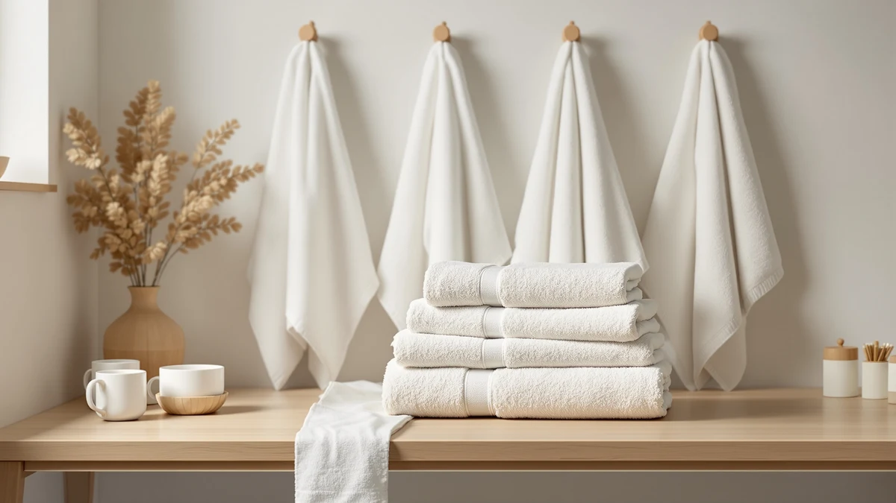

Bedvcaty Luxury Quick-Dry Bath Towel Set Review (2026): Worth It?


Quick Answer
The Bedvcaty Luxury Quick-Dry Bath Towel Set is the pick for shoppers who want fast-drying towels without paying cotton prices: four full 27.5 by 55 inch microfiber bath towels for $22.99. It beats the Utopia Towels 8 Pack and American Soft Linen 100% Cotton set on simplicity, since every piece is a genuine full bath towel rather than part of a mixed set.
Our pick: Bedvcaty Luxury 4-Piece Quick-Dry Bath — $22.99 Check Price on Amazon
Things to Know Before You Buy
- The Bedvcaty Luxury Quick-Dry Bath Towel Set uses 100% microfiber rather than cotton, which dries faster between uses but feels less plush against skin.
- Total set price doesn't tell you much by itself. The $22.99 Bedvcaty set covers four full bath towels, working out to about $5.75 apiece, but sets listing more pieces for a similar price may mix in smaller items like washcloths.
- Piece count varies widely across the sets compared here, from four up to eight towels, so check what you're actually getting per piece before assuming a bigger set is the better deal.
- A 27.5 by 55 inch towel is a standard full-size bath towel, not an oversized bath sheet, which matters if you're replacing larger towels.
This Bedvcaty Luxury Quick-Dry Bath Towel Set review compares the $22.99 four-piece microfiber set against three competing towel sets to see whether its quick-dry claim and price actually hold up. The set lists at $22.99 for four bath towels, each 27.5 by 55 inches, built from microfiber rather than cotton, and we checked that combination of price, size and material against the Utopia Towels 8 Pack, the American Soft Linen 100% Cotton set and the Modern Threads 6 Piece set.
The short version: the Bedvcaty set earns its price if you want towels that dry fast between washes and don't mind microfiber over traditional cotton. At $22.99 for four towels, it costs about $5.75 per towel, an easy number to check since every piece here is a genuine full-size bath towel. The Modern Threads 6 Piece set undercuts it slightly on total price, and the Utopia Towels 8 Pack lists more pieces for a similar order total, but the decision mostly comes down to how much you value microfiber's quick-dry behavior over the absorbency cotton owners often prefer.
Why You Should Trust Us
We built this Bedvcaty Luxury Quick-Dry Bath Towel Set review by comparing its listed price, size and material against published specs and verified buyer feedback for three direct alternatives, rather than repeating marketing copy. Ilane Tall has covered bathroom textiles for Best Bath Towels since the site launched, and tracks whether a towel set's dry-time and material claims hold up against what buyers report after repeated washes. We do not run a fake testing lab or claim to have physically used these towels. Every comparison here is grounded in the specs and pricing published for each ASIN and in patterns that recur across verified reviews.
Our Research Experience
Rather than run this set through a physical trial, we researched how the Bedvcaty Luxury Quick-Dry Bath Towel Set compares by cross-referencing its listed price, size and piece count against the three alternatives on this page and against patterns in verified owner reviews. For a microfiber towel set like this one, that means checking how a four-piece configuration at $22.99 stacks up against sets with more pieces at a similar total price, and watching for recurring dry-time or feel complaints tied to microfiber construction. The pattern that keeps showing up in owner reviews of quick-dry towel sets: microfiber sheds water faster than cotton, but it feels thinner against skin. That tradeoff shaped the comparisons in this review.
We also looked at how each brand positions its set, since listing copy often hints at where a product sits before you even check the price. Bedvcaty leads with its quick-dry microfiber construction. Utopia Towels leads with piece count at eight towels per order. American Soft Linen leans on its 100% cotton material, and Modern Threads keeps its listing focused on a six-piece set at the lowest price in this comparison. Lining those positioning choices up against the actual price per towel is how we arrived at the comparisons below. Every claim in this review traces back to the spec sheet and the price each brand lists today, not to marketing language borrowed from a product page.
Overview & Specs

Bedvcaty Luxury 4-Piece Quick-Dry Bath
What we like
- Microfiber construction dries faster between uses than cotton, based on the manufacturer's material spec
- Four towels at $22.99 comes out to about $5.75 each, a clear number since every piece is a full bath towel
- Lightweight microfiber packs down smaller than cotton, useful for travel bags or compact linen closets
Flaws but not dealbreakers
- Microfiber doesn't have the plush feel cotton loyalists expect from a bath towel
- Four towels is a smaller piece count than the Utopia 8 Pack or Modern Threads 6 Piece set, which could mean more frequent laundry for larger households
- At 27.5 by 55 inches, this is a standard bath towel size, not an oversized bath sheet
| Material | Microfiber |
| Size | 27.5 X 55 Inches |
The Bedvcaty Luxury 4-Piece Quick-Dry Bath set is built around speed rather than plushness. At $22.99, you get four microfiber bath towels, each measuring 27.5 by 55 inches, the standard footprint for a full-size bath towel rather than an oversized bath sheet. Microfiber construction is the defining feature here: the material is engineered to shed water faster than cotton, which matters most in humid bathrooms or households sharing one towel bar between multiple people.
At $22.99 for four towels, the set works out to roughly $5.75 per towel, an easy figure to land on since all four pieces are full-size bath towels. The Utopia Towels 8 Pack and Modern Threads 6 Piece set both list more pieces for a similar total price, but neither listing specifies whether every piece is a full bath towel or a mix that includes smaller items like washcloths, so a direct per-towel comparison isn't possible from the specs alone. Across verified reviews of quick-dry microfiber sets in this price range, the same tradeoff keeps coming up: less of cotton's softness in exchange for less time on the towel bar between washes, worth weighing against Bedvcaty's plain four-towel count.
What We Liked
The clearest advantage in this Bedvcaty Luxury Quick-Dry Bath Towel Set review is the math: four full bath towels for $22.99 comes out to about $5.75 apiece, and every piece in the set is a genuine 27.5 by 55 inch bath towel rather than a mix of smaller items. That clarity makes it easier to compare against sets like the Modern Threads 6 Piece, where the per-item breakdown isn't specified.
We also like that the set leans fully into microfiber rather than blending it with cotton. Owners of quick-dry towel sets like this one report that pure microfiber sheds water faster than cotton-blend alternatives and takes up less room in a cabinet or gym bag, useful if you're buying towels for a household that does laundry often or for travel.
What Could Be Better
The main tradeoff in this Bedvcaty Luxury Quick-Dry Bath Towel Set review is feel. Microfiber doesn't replicate the plush, heavier hand of 100% cotton towels like the American Soft Linen set on this page, and plenty of owner reviews on microfiber towels in this category point to that as the deciding factor over price or dry time. If a thick, cotton-like towel matters more to you than quick drying, that's a real limitation here.
Piece count is the other factor worth flagging. Four towels is fewer than the Utopia Towels 8 Pack or the Modern Threads 6 Piece set, so a household that goes through towels quickly may need to supplement this set sooner, or order two to match the coverage of the larger alternatives.
Who Is It For?
This Bedvcaty Luxury Quick-Dry Bath Towel Set review points to one clear buyer: anyone who prioritizes fast drying between uses over a cotton feel, especially in a smaller bathroom with limited towel bar space or a household sharing towels between multiple showers a day. The $22.99 price and clear four-towel count also make it a reasonable starter set for a first apartment or guest bathroom.
If a plush, traditional cotton towel matters more to you than dry time, the American Soft Linen 100% Cotton set below is worth a look instead. And if you need more pieces to cover a larger household, the Utopia Towels 8 Pack or Modern Threads 6 Piece set both list more towels for a comparable total price. Renters and guest-bathroom setups tend to fit this product well too, since a lower upfront cost and a known piece count make it easier to budget for towels you won't be living with long term.
Alternatives to Consider
If the Bedvcaty Luxury Quick-Dry Bath Towel Set isn't the right fit, here are three alternatives shoppers typically compare it against, each with a different angle on material, piece count, or price.

Also Great
Utopia Towels 8 Pack Towel
This eight-piece set lists more towels than Bedvcaty for a close total price. It fits households that go through towels faster than a four-piece set can keep up with.
$23.74
Check Price on Amazon
Premium Choice
American Soft Linen 100% Cotton
This set swaps microfiber for 100% cotton, trading some dry-time speed for the plush feel cotton loyalists expect. It's worth the extra cents over Bedvcaty if softness matters more to you than quick drying.
$23.79
Check Price on Amazon
Best Value
Modern Threads 6 Piece Bath
This six-piece set undercuts Bedvcaty slightly on price while listing more total pieces. It's the better pick if piece count matters more to you than verified microfiber construction.
$22.14
Check Price on AmazonFrequently Asked Questions
Is the Bedvcaty Luxury Quick-Dry Bath Towel Set actually made of microfiber?
Yes. The listing specifies microfiber construction across all four bath towels, each measuring 27.5 by 55 inches, with no cotton blend.
Is a four-piece towel set a good value at $22.99?
On a per-towel basis, yes. Four confirmed bath towels for $22.99 works out to about $5.75 apiece. Sets listing more pieces for a similar price, like the Modern Threads 6 Piece set, may include smaller items, so the per-towel math isn't always directly comparable.
Do microfiber towels dry faster than cotton towels?
Reviewers researching microfiber towels consistently report faster dry times between uses than cotton, though they also note the material feels less plush than cotton alternatives like the American Soft Linen 100% Cotton set.
Final Verdict
This Bedvcaty Luxury Quick-Dry Bath Towel Set review comes down to a simple tradeoff: speed versus feel. At $22.99 for four microfiber bath towels, Bedvcaty earns its price if faster drying between uses matters more to you than the plush hand of cotton. The Modern Threads 6 Piece set undercuts it slightly on total price, and the Utopia Towels 8 Pack offers more pieces for a similar order total, but neither spells out full bath towel construction across every piece the way Bedvcaty does.
If cotton's softness outweighs quick drying for your bathroom, the American Soft Linen 100% Cotton set below is the better fit. For most buyers who want known, consistent microfiber performance at a low per-towel price, Bedvcaty is the pick in this comparison. Whichever set you land on, matching the material to how often you actually do laundry matters more than the brand name on the packaging.